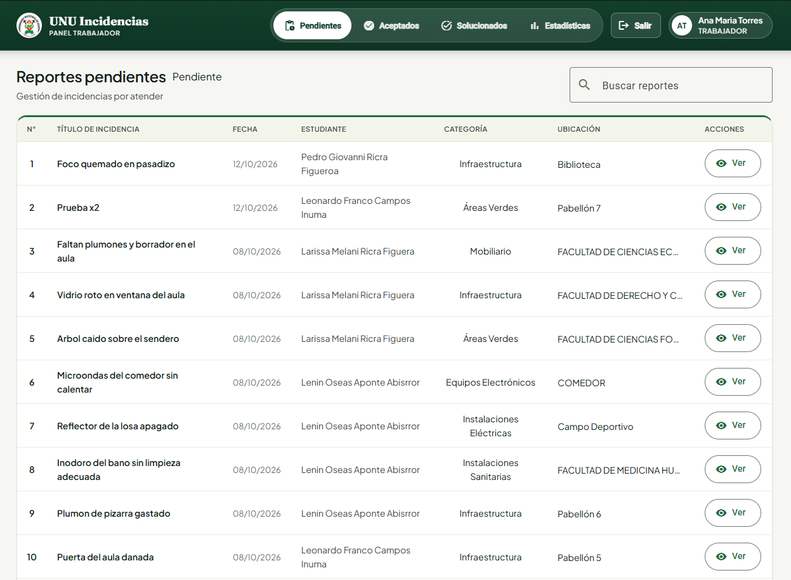
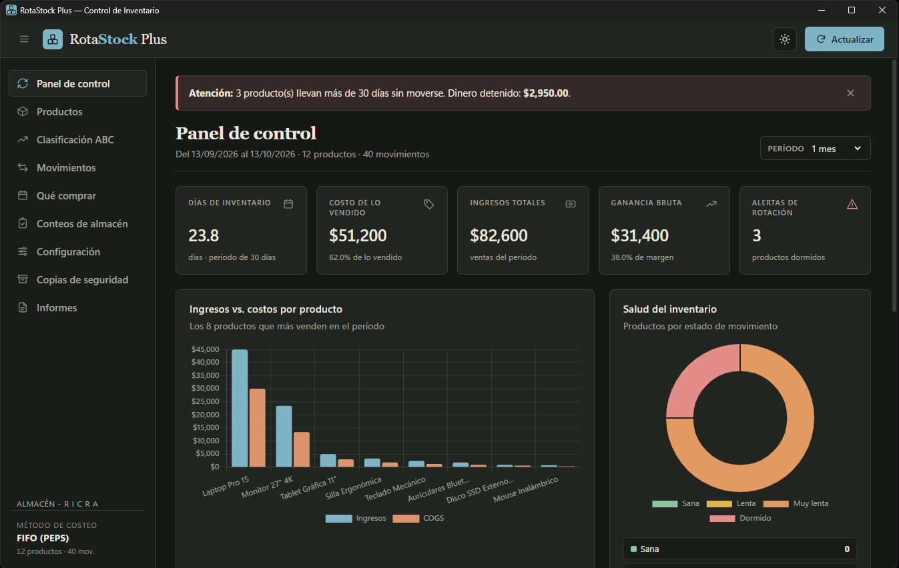
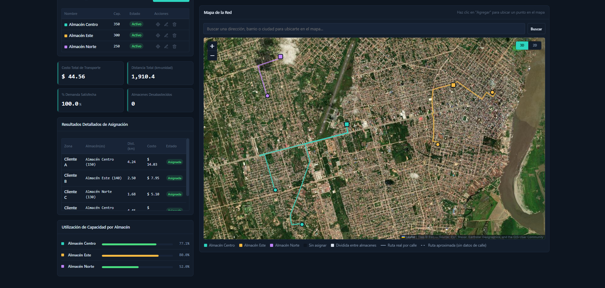

Desarrollo de Software
Aplicaciones web modernas, arquitecturas SPA y herramientas nativas de escritorio.
00 — Hola, soy
Estudiante de Ingeniería de Sistemas • Full-Stack & QA Automation
Construyo soluciones orientadas a problemas reales: aplicaciones web escalables, arquitecturas de APIs robustas y herramientas de escritorio optimizadas.
location_on Pucallpa, Perú • Disponible para prácticas y proyectos profesionales
Estudiante de Ingeniería de Sistemas (IX ciclo) en la Universidad Nacional de Ucayali, con experiencia práctica en desarrollo de software, integración frontend–backend y automatización de pruebas.
Me interesa construir soluciones orientadas a problemas reales: desde aplicaciones web interactivas y APIs empresariales hasta herramientas de escritorio offline y algoritmos heurísticos de optimización territorial.
Actualmente enfoco mi desarrollo técnico en Angular + Node.js + MySQL y Java + Spring Boot + MySQL, integrando buenas prácticas de clean code, pruebas automatizadas en Selenium y gestión colaborativa bajo marcos ágiles (Scrum).
Aplicaciones web modernas, arquitecturas SPA y herramientas nativas de escritorio.
Diseño de APIs REST documentadas, modelado relacional y transacciones confiables.
Pruebas funcionales e integración continua con Selenium IDE y suites de pruebas.
Optimización de rutas logísticas por calle y modelos matemáticos de demanda.
Lenguajes de programación fuertemente tipados y relacionales.
JavaTypeScriptJavaScriptSQLPython
Interfaces fluidas, accesibles y modulares con estándares web.
AngularHTML5CSS3FigmaBalsamiq
Lógica de negocio, middleware y documentación de endpoints.
Node.jsSpring BootPostmanSwaggerJWT
Diseño entidad-relación, normalización y optimización de consultas.
MySQLSQL ServerJSON
Herramientas offline, control FIFO e integración de modelos geográficos.
ElectronLeafletChart.jsHeurísticas
Control de versiones, contenedores, automatización QA y agilidad.
SeleniumGit / GitHubDockerColabScrum
Sistemas completos con interfaces productivas, manejo de estado robusto y persistencia relacional.

Gestión de campus universitario · 2025
Aplicación web para reportar y monitorear incidencias de infraestructura del campus de la Universidad Nacional de Ucayali. Panel de trabajador con pendientes, aceptados y solucionados, dashboard con KPIs y módulo del estudiante con foto, tipo y ubicación.
TypeScriptAngularNode.jsMySQL
Software de almacén desktop · 2026
Aplicación de escritorio offline para el ciclo completo del inventario: costeo FIFO (PEPS), semaforización de rotación, matriz ABC/XYZ, plan de compras asistido, conteos auditables, reportes en PDF y Excel, y copias de seguridad automáticas.
JavaScriptElectronChart.jsSheetJS


Optimización geoespacial · 2026
Sistema web interactivo que resuelve la asignación almacén–zona de demanda sobre mapas reales (Pucallpa): distancias efectivas por trazado urbano, factores de seguridad, KPIs de costo y utilización, y respaldo automático ante fallos del servicio de rutas.
JavaScriptLeaflet MapsHeurísticasGeoJSON
Universidad Nacional de Ucayali • Pucallpa · Sistema de Posgrado · Plataforma AURA
AngularNode.jsMySQLSeleniumScrum
Remoto · 3 sistemas publicados con demo o instalador
AngularElectronLeafletDocker
Universidad Nacional de Ucayali (UNU) • Pucallpa, Perú
Cursando el IX ciclo. Énfasis en arquitectura de software, bases de datos relacionales, investigación operativa y QA.
verifiedEn curso • IX ciclo
Resolución de problemas algorítmicos complejos y optimización de código bajo presión, en equipo de 3 integrantes.
military_techConcurso nacional
Actualización en innovación tecnológica, arquitecturas modernas y tendencias en ingeniería.
military_techFormación continua
¿Buscas un desarrollador proactivo para tus proyectos o estás reclutando talentos para prácticas profesionales? Escríbeme y conversemos sobre cómo aportar valor.